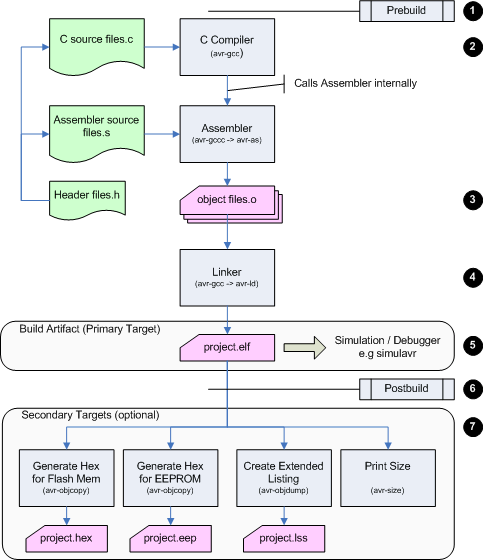

AVR Eclipse Toolchain
Whenever
the project is build, a makefile is generated and executed, which implements
the following process (for an AVR application):

- The build process starts by executing the user supplied prebuild script/executable,
where the user can define additional tasks that need to be run before the
actual build process starts.
- Then all source files are compiled and
- stored as Object files (*.o)
- The Linker takes all Object files and linkes them together in one file
- The ELF file contains the binary code and data as well as
debugging and other internal information. Most AVR simulators can take
a file in this format to run and debug the application.
- Once the ELF file has been created, a user supplied Postbuild script/executable
is called.
Calling the postbuild script at this point, before the secondary targets
have been build, is a limitation of the CDT plugin.
- With the ELF file as input the Secondary Targets create some optional
| *.hex |
A hex dump file for downloading to an AVR processor flash
memory |
| *.eep |
A hex dump file for downloading to an AVR processor EEPROM |
| *.lss |
An extended listing with the source data intermixed with
the generated assembler code |
| Print size |
prints the size of the generated application to the
console.
Due to the internal design of CDT this "outputs" a pseudotarget called
"sizedummy", as without an output CDT would not include the avr-size
command in the toolchain. |
All generated files (colored pink in the flowchart above), including the makefile, are stored in a folder with the name of the current configuration (e.g. "Debug" or "Release").
 Back: Concepts
Back: Concepts
© 2007 Thomas Holland